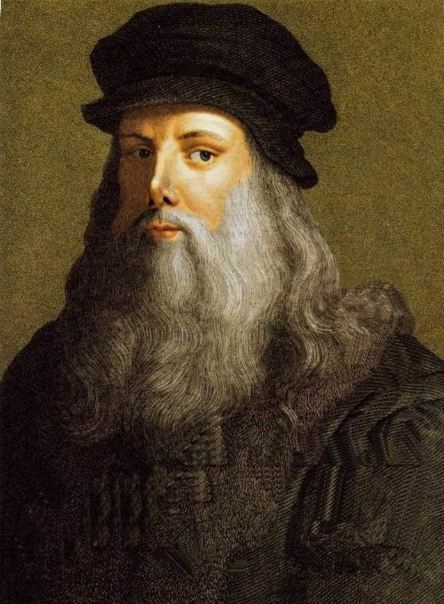

Leonardo da Vinci
Leonardo di ser Piero da Vinci (Bu ses hakkındatelaffuz (yardım·bilgi)) (15 Nisan 1452 - 2 Mayıs 1519), Rönesans döneminde yaşamış İtalyan hezârfen, döneminin önemli bir filozofu, astronomu, mimarı, mühendisi, mucidi, matematikçisi, anatomisti, müzisyeni, heykeltıraşı, botanisti, jeoloğu, kartografı, yazarı ve ressamıdır. En tanınmış yapıtları Vitruvius Adamı (1490-1492), Mona Lisa (1503-1507) ve Son Akşam Yemeği'dir (1495-1497). Rönesans sanatını doruğuna ulaştırmış, yalnız sanat yapısına değil, çeşitli alanlardaki araştırmaları ve buluşlarıyla da tanınan, dünyanın gelmiş geçmiş en büyük sanatçılarından ve dehalarından biri kabul edilmektedir.[1]